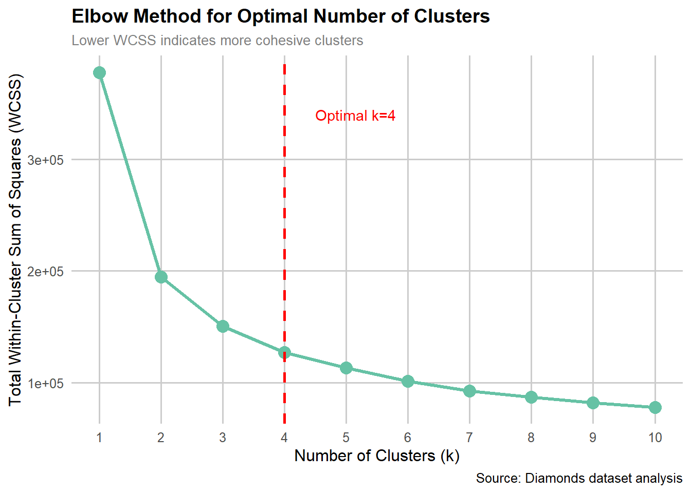
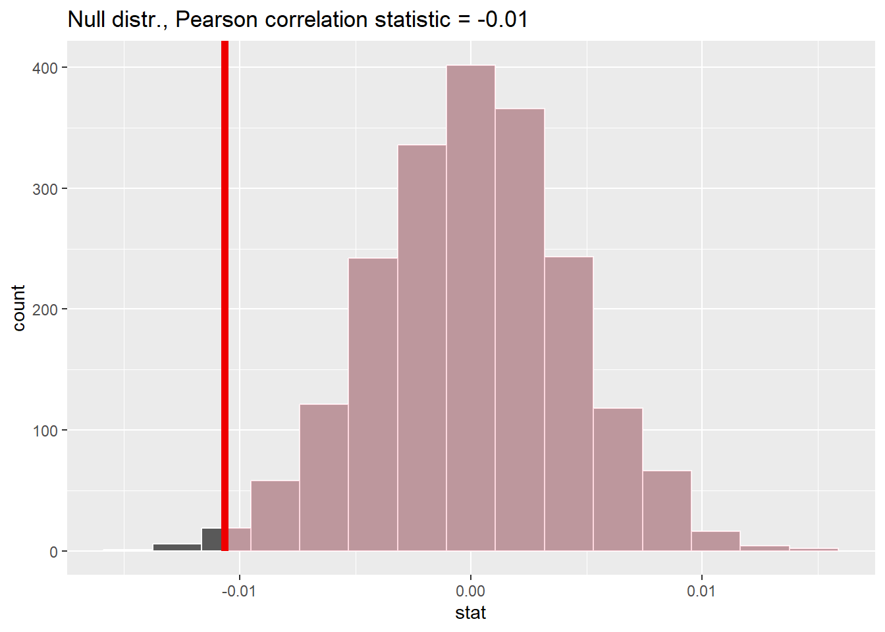
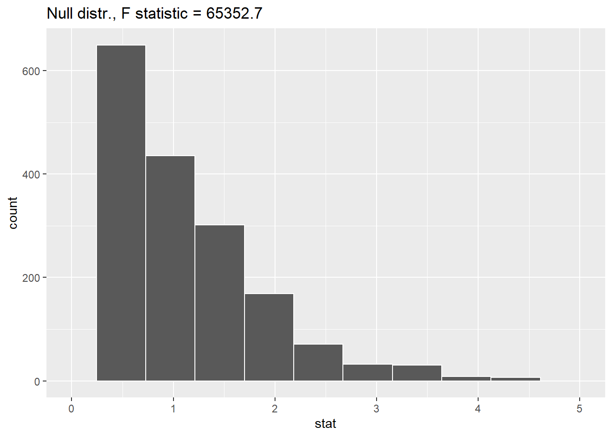
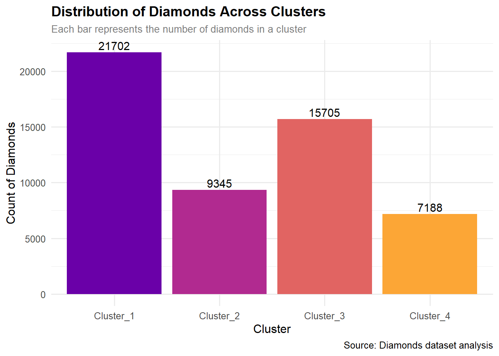
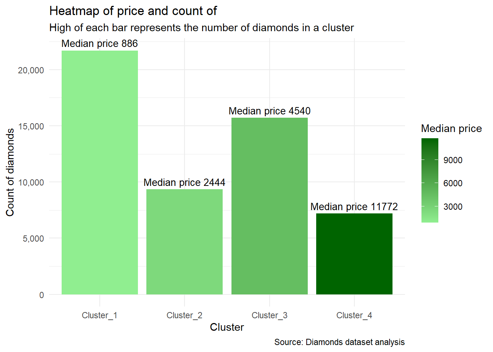
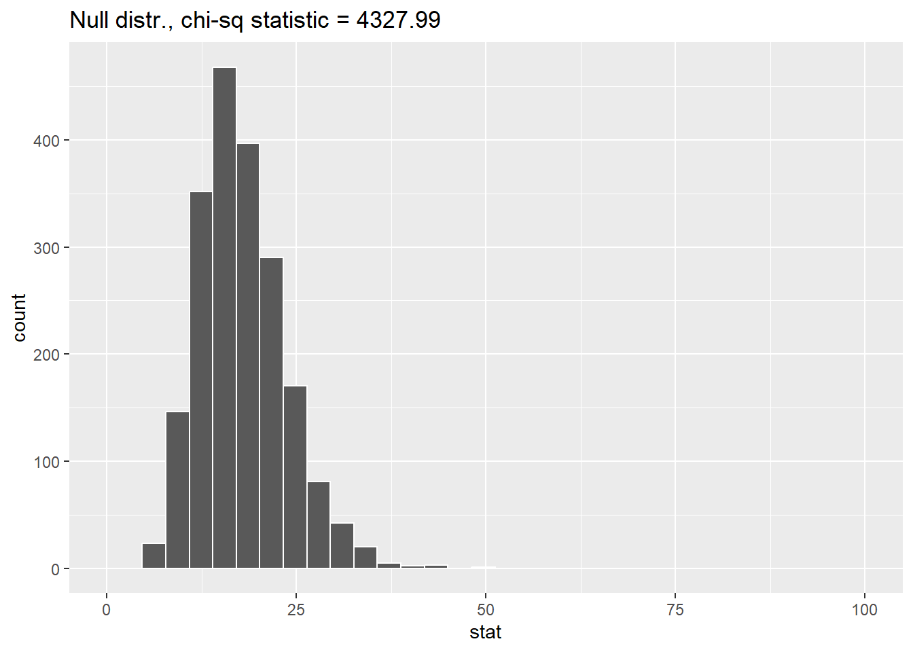
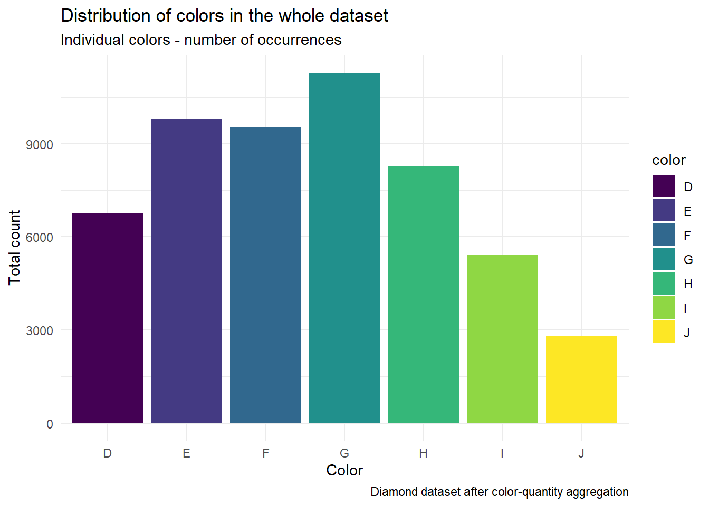
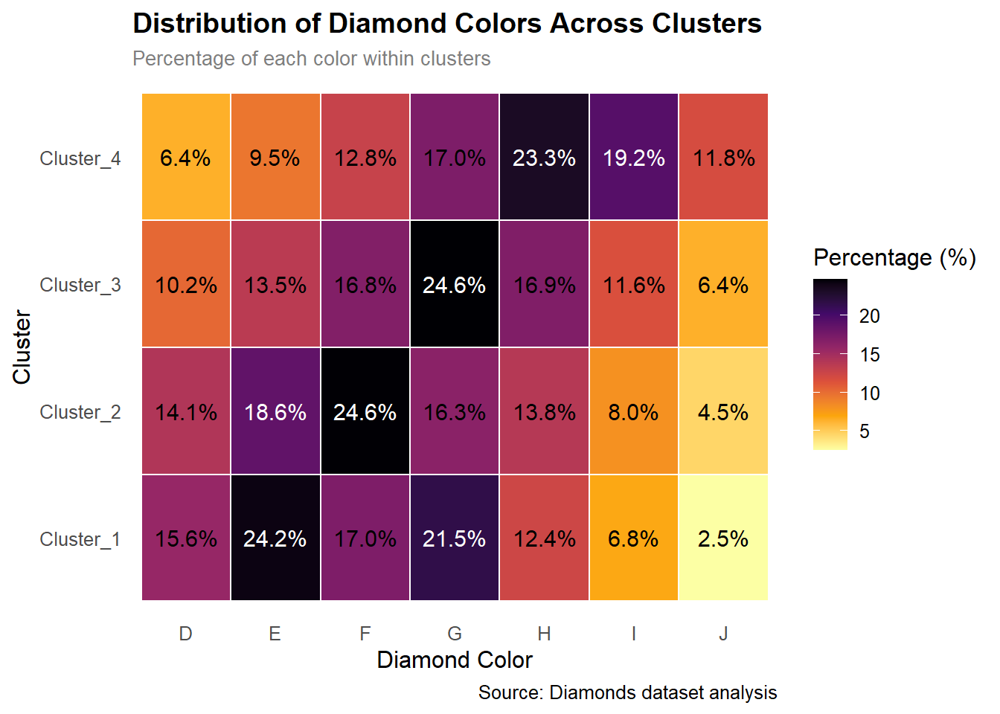

library(tidyclust)
library(dplyr)
library(tidymodels)
library(ggplot2)
library(DT)
library(infer)
library(clustMixType)
library(tidyr)
library(corrplot)
library(RColorBrewer)
library(viridis)K-means clustering and statistical inference - diamonds dataset
Introduction
A common problem in jewelry stores is the division of diamonds into price categories, so that the number of shelves for each category can be optimally selected, as well as the shelf design to facilitate the presentation of diamonds in a given category - so that the diamond colors dominant in a given category look their best.
Methodology
This paper will describe the clustering problem using the example of dividing a diamond dataset into four logical parts.
Simply assigning a cluster to a row doesn’t really add anything. However, if a relationship between the cluster and other columns is discovered, the cluster to which the row belongs provides some information. To obtain information about the relationship between the cluster and existing columns, statistical methods—primarily hypothesis testing—can be used.
Therefore, a clustering of the diamond set will be carried out and then the relationships between:
diamond depth and price (unrelated to the cluster, but intended to demonstrate the infer package methodology)
cluster and diamond price (based on F-statistics)
cluster and diamond color (based on chi-square statistic)
Finally, conclusions will be presented.
Loading libraries
The first step is to load the appropriate libraries
Loading a data
The diamond dataset is being loaded
data("diamonds")datatable(head(diamonds, caption = "First few rows of diamonds dataset"))Using the elbow method to determine the number of clusters
First of all, the data is standardized
diamonds_for_elbow <- diamonds %>%
select(where(is.numeric)) %>%
scale() A statistical summary data frame is then created with the number of clusters ranging from one to ten.
k_grid <- tibble(k = 1:10) %>%
mutate(
kclust = map(k, ~kmeans(diamonds_for_elbow, centers = .x, nstart = 25)),
glanced = map(kclust, glance)
)Next, we unpack the contents of the individual statistical summaries
k_summary <- k_grid %>%
unnest(glanced)Finally, one can draw a graph of the dependence of the cluster on the within-cluster sum of squares, which determines the coherence of the cluster - the closer they lie to the centroids, the smaller this distance.
library(RColorBrewer)
ggplot(k_summary, aes(x = k, y = tot.withinss)) +
geom_line(color = brewer.pal(3, "Set2")[1], linewidth = 1.2) +
geom_point(size = 4, color = brewer.pal(3, "Set2")[1]) +
geom_vline(xintercept = 4, linetype = "dashed", color = "red", linewidth = 1) +
annotate("text", x = 4.5, y = max(k_summary$tot.withinss) * 0.9,
label = "Optimal k=4", color = "red", hjust = 0) +
labs(
title = "Elbow Method for Optimal Number of Clusters",
subtitle = "Lower WCSS indicates more cohesive clusters",
x = "Number of Clusters (k)",
y = "Total Within-Cluster Sum of Squares (WCSS)",
caption = "Source: Diamonds dataset analysis"
) +
scale_x_continuous(breaks = 1:10) +
theme_minimal(base_size = 12) +
theme(
plot.title = element_text(face = "bold", size = 14),
plot.subtitle = element_text(size = 10, color = "grey50"),
panel.grid.major = element_line(color = "grey80"),
panel.grid.minor = element_blank()
)
Based on the graph, the number of clusters equal to four can be assumed as optimal.
Filtering a data - domain knowledge
Due to the relationship between the mass of a diamond and its size, the columns of sizes are removed and the column of diamond mass is left.
diamonds_num <- diamonds %>% select(-x, -y, -z)Data preprocessing
This section will present the process of preparing data for the model not based on domain knowledge, but on transformations and calculations.
Data standardization
The second step is to standardize the numerical data. To do this, we’ll create a recipe that allows us to obtain a data frame with standardized numerical data.
scaled_numeric_columns <- recipe(~., data = diamonds_num) %>%
step_rm(all_nominal()) %>%
step_normalize(all_numeric()) %>%
prep() %>%
bake(new_data = NULL)Then we replace the previous numeric columns with the new ones
diamonds_num <- diamonds_num %>%
select(-where(is.numeric)) %>%
bind_cols(scaled_numeric_columns)After transformations, the data looks like below
datatable(head(diamonds, caption = "First few rows of diamonds dataset - ready for k_prototypes"))Model of clustering
Diamonds dataset will divided into four subsets - clusters - this is topic of that section
At first - model to do clustering is instancied
The model that will perform clustering was selected. The k-means function was chosen as the model’s “interface,” but due to the presence of both categorical and numerical data, the clustMixType model was chosen.
model <- k_means(num_clusters = 4) %>%
set_engine("clustMixType")Model - fit
The model is trained on all available data
fitted_model <- fit(model, ~ ., data = diamonds_num)Prediction using fitted model
Appending a cluster column to existing columns
augmented_data <- augment(fitted_model, new_data = diamonds_num)Head of new dataset
datatable(head(augmented_data, caption = "First few rows of augmented_data"))It is clearly visible that the column with the cluster designation has been added correctly.
Hypotesis testing
This section will test three hypotheses: the first concerns numerical variables and aims to demonstrate the infer package’s operation using an intuitive correlation example. The other two will be based on more advanced statistics: F and chi-square.
Correlation of depth and price (demonstration of the infer methodology)
To understand the infer methodology, an example will be presented to determine the relationship between depth and price of a diamond.
Initially, the Pearson statistic is calculated for the actual data distribution
obs_corr <- augmented_data %>%
specify(depth ~ price) %>%
calculate(stat = "correlation") Then the statistic is calculated 2000 times (the value generally accepted in the literature) - for the distribution with swapped values of depth and diamond price. We put forward the null hypothesis - no relationship between depth and diamond price.
The null hypothesis (H0) is formed - there is no relationship between depth and diamond price. Hypothesis H1 says the opposite.
null_corr <- augmented_data %>%
specify(depth ~ price) %>%
hypothesize(null = "independence") %>% # H0: brak związku
generate(reps = 2000, type = "permute") %>%
calculate(stat = "correlation") The null hypothesis assumed no relationship between depth and diamond price. We calculated the probability that the calculated Pearson statistic value would be obtained in the absence of a relationship.
p_val_corr <- get_p_value(null_corr, obs_corr, direction = "greater")
p_val_corr # A tibble: 1 × 1
p_value
<dbl>
1 0.995The value of the statistic is marked on the null distribution graph - if it is outside the range, we reject the null hypothesis.
visualize(null_corr) +
shade_p_value(obs_corr, direction = "greater") +
labs(
title = paste("Null distr., Pearson correlation statistic =", ... = round(obs_corr$stat[1],2))
)
Based on the above results, we accept the null hypothesis - there is a NO relationship between the depth of the diamond and its price
Relationship between assigned cluster and price
The purpose of this section is to determine whether a relationship exists between the assigned cluster and the price of a diamond. As in the previous example, the null distribution statistic and the value are calculated. Because we are determining a relationship between a categorical (cluster) and a numerical data item, the F statistic will be used.
obs_f <- augmented_data %>%
specify(price ~ .pred_cluster) %>%
calculate(stat = "F") As before, the hypothesis of no relationship is put forward. Hypothesis H1 says the opposite - there is a relationship price - cluster.
null_f <- augmented_data %>%
specify(price ~ .pred_cluster) %>%
hypothesize(null = "independence") %>%
generate(reps = 2000, type = "permute") %>%
calculate(stat = "F") The meaning of p is analogous to the previous one, but it concerns the relationship between cluster and price
p_val_f <- get_p_value(null_f, obs_f, direction = "greater")Warning: Please be cautious in reporting a p-value of 0. This result is an approximation
based on the number of `reps` chosen in the `generate()` step.
ℹ See `get_p_value()` (`?infer::get_p_value()`) for more information.p_val_f # A tibble: 1 × 1
p_value
<dbl>
1 0Visualization of the null distribution graph
visualize(null_f) +
xlim(0, 5)+
shade_p_value(obs_f, direction = "greater") +
labs(
title = paste("Null distr., F statistic =", round(obs_f$stat[1],2))
)
Based on the data obtained above, the null hypothesis is rejected - there is a relationship between the price of a diamond and the assigned cluster.
Verification of the adopted hypothesis
To verify the hypothesis, a graph will be prepared illustrating the relationship between clusters, the number of available diamonds, and average prices. If individual clusters exhibit a common trend in the number of available diamonds, this indicates that they may differ in price – the fewer diamonds of a given type/cluster, the more expensive they should be. This relationship will then be visualized directly.
First, the quantity-cluster relationship will be illustrated.
ggplot(augmented_data, aes(x = .pred_cluster, fill = .pred_cluster)) +
geom_bar() +
geom_text(aes(label = ..count..), stat = "count", vjust = -0.3, size = 4) +
scale_fill_viridis_d(option = "C", begin = 0.2, end = 0.8) +
labs(
title = "Distribution of Diamonds Across Clusters",
subtitle = "Each bar represents the number of diamonds in a cluster",
x = "Cluster",
y = "Count of Diamonds",
caption = "Source: Diamonds dataset analysis"
) +
theme_minimal(base_size = 12) +
theme(
plot.title = element_text(face = "bold", size = 14),
plot.subtitle = element_text(size = 10, color = "grey50"),
legend.position = "none" # Usunięcie legendy, bo kolory nie są kluczowe
)
Then, in order to directly evaluate the average price in a given category, we transform the data through grouping and aggregation.
augmented_data_denorm_price <- augmented_data %>%
mutate(price = diamonds$price)augmented_data_summary_price <- augmented_data_denorm_price %>%
select(price, .pred_cluster) %>%
group_by(.pred_cluster) %>%
summarise(across(where(is.numeric), median),
count = n())Plot of relations of price - cluster - count of diamonds in cluster
ggplot(augmented_data_summary_price, aes(x = .pred_cluster, y = count, fill = price)) +
geom_col() +
geom_text(aes(label = paste("Median price",round(price, 0))), vjust = -0.5, size = 3.5) +
scale_fill_gradient(low = "lightgreen", high = "darkgreen") +
labs(title = "Heatmap of price and count of",
subtitle = "High of each bar represents the number of diamonds in a cluster",
x = "Cluster",
y = "Count of diamonds",
fill = "Median price",
caption = "Source: Diamonds dataset analysis") +
theme_minimal() +
scale_y_continuous(labels = scales::comma) 
The analysis of the above graphs allows us to confirm the adopted hypothesis (H1 - there is a relation) about the relationship between the assigned cluster and the diamond price. However, when analyzing both charts above, some unspecified factor - apart from price - influences the division of clusters.
Relationship between assigned cluster and color
To determine the relationship between cluster and color, the chi-square statistic will be calculated - as the relationship between categorical values is assessed.
The procedure is similar to the previous one.
obs_chisq <- augmented_data %>%
specify(color ~ .pred_cluster) %>%
calculate(stat = "chisq") As before - the null hypothesis says that there is no relationship between cluster and price
null_chisq <- augmented_data %>%
specify(color ~ .pred_cluster) %>%
hypothesize(null = "independence") %>%
generate(reps = 2000, type = "permute") %>%
calculate(stat = "chisq")Similarly to the previous example, the p value is calculated
p_val_chisq <- get_p_value(null_chisq, obs_chisq, direction = "greater")Warning: Please be cautious in reporting a p-value of 0. This result is an approximation
based on the number of `reps` chosen in the `generate()` step.
ℹ See `get_p_value()` (`?infer::get_p_value()`) for more information.p_val_chisq# A tibble: 1 × 1
p_value
<dbl>
1 0visualize(null_chisq) +
xlim(0, 100)+
labs(
title = paste("Null distr., chi-sq statistic =", round(obs_chisq$stat[1],2))
)
Based on the data obtained above, the null hypothesis is rejected - there is relationship between the color of a diamond and the assigned cluster.
Verification of the adopted hypothesis
As in the previous hypothesis, graphs are created to assess the correctness of the adopted hypothesis.
First, you need to group the data by the color of the diamond and perform aggregation - the sum of occurrences
augmented_data_for_color <- augmented_data %>%
group_by(color) %>%
summarise(count_of_color= n())Then we draw a graph of the number of diamonds of a given color in the entire set, without dividing them into clusters.
ggplot(augmented_data_for_color, aes(x = color, y = count_of_color, fill = color)) +
stat_summary(fun = sum, geom = "bar") +
labs(x = "Color", y = "Total count", title = "Distribution of colors in the whole dataset",
subtitle = "Individual colors - number of occurrences",
caption = "Diamond dataset after color-quantity aggregation") +
theme_minimal()
Next, you should examine the proportion of diamonds in each cluster. By comparing the proportions with the previously obtained bar chart, you can assess how closely the color proportions in each cluster compare to the overall set.
First, it is necessary to group the data appropriately
diamonds_cluster_color <- augmented_data %>%
group_by(.pred_cluster, color) %>%
summarise(count_of_color = n(), .groups = "drop") %>%
group_by(.pred_cluster) %>%
mutate(percentage = count_of_color / sum(count_of_color) * 100) %>%
select(-count_of_color)Once you have grouped your data, you can easily draw the appropriate graph.
ggplot(diamonds_cluster_color, aes(x = color, y = .pred_cluster, fill = percentage)) +
geom_tile(color = "white", linewidth = 0.5) +
geom_text(
aes(
label = sprintf("%.1f%%", percentage),
color = ifelse(percentage > 18, "white", "black")
),
size = 4
) +
scale_color_identity() +
scale_fill_viridis_c(option = "inferno", direction = -1) +
labs(
title = "Distribution of Diamond Colors Across Clusters",
subtitle = "Percentage of each color within clusters",
x = "Diamond Color",
y = "Cluster",
fill = "Percentage (%)",
caption = "Source: Diamonds dataset analysis"
) +
theme_minimal(base_size = 12) +
theme(
plot.title = element_text(face = "bold", size = 14),
plot.subtitle = element_text(size = 10, color = "grey50"),
panel.grid = element_blank()
)
Analyzing the two graphs above, it is clear that the distribution of colors in individual groups is often different from the distribution in the entire set. This confirms the hypothesis about the existence of a relationship between cluster membership and color.
Summary
By dividing the diamond collection into clusters, it can be concluded that the division was made primarily based on price. The cluster assigned is related to color but price is unrelated to the diamond’s depth.
Due to the extreme p parameter values obtained — close to 0 or 1 — the probabilities of the accepted hypotheses are very high.
It should be noted that the two hypotheses adopted were confirmed by the analysis of the graphs of the relevant data.
Conclusions from a diamond shop’s point of view
The above analysis proved that dividing diamonds by color and price is possible, and thanks to the resulting model, it is possible to automate the cluster assignment process. This allows for the optimization of the number of diamond shelves and their arrangement when delivering new diamonds to a jewelry store.
The dataset was divided into four price categories. Dividing the diamonds into more price categories would not have provided much order, and merely separating diamonds into more than four categories would have been labor-intensive and would have yielded little. Furthermore, the goal of the analysis was achieved – it is known that different colors dominate in each price category, so the display can be adjusted. Therefore:
- Diamonds from cluster one should have a display that well highlights colors G and E – appropriate shelves and other display materials must be ordered.
- Diamonds from cluster two should have a display that well highlights color E.
- Diamonds from cluster three should have a display that well highlights colors F, G, and H.
- Diamonds from cluster four should have a display that well highlights colors G, H, and I.